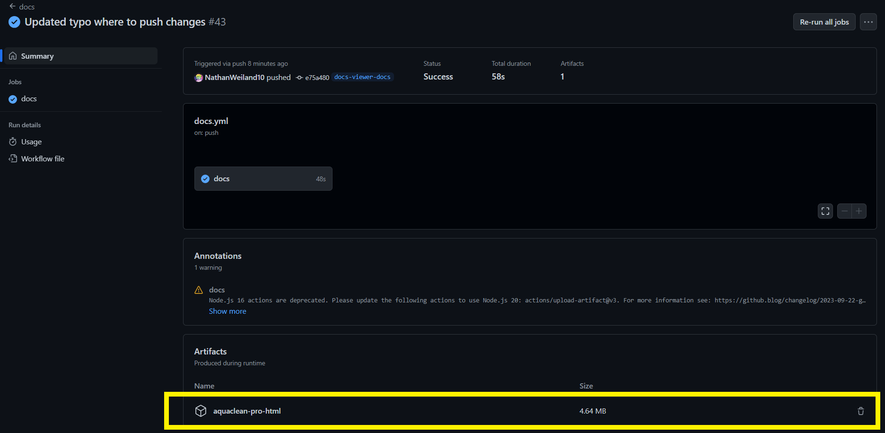

Overview of the AquaClean Pro Document Viewer (ACP-DV)
The ACP-DV can be found at https://nathanweiland10.github.io/AquaCleanPro/ or under the custom domain https://docs.aquacleanpro.org/.
The ACP-DV contains source code for the AquaClean Pro, meeting minutes, and other useful links and resources regarding the development and use of the AquaClean Pro.
Adding Files to the ACP-DV
To add files to the ACP-DV, follow these steps:
Create a new GitHub branch from the repo: https://github.com/NathanWeiland10/AquaCleanPro and create a markdown file. Typically these files should be placed in the
docsdirectory.Under the
docsdirectory, locate theindex.rstfile. The file should look like the following:Either add to an existing
.. toctree::or create a new one. Creating a new.. toctree::with a specified caption will create a header in the ACP-DV, as shown in the following for “Documentation”:Add the relative path of the markdown file under the
.. toctree::.Upload your branch / push your changes to the GitHub repo. An automated job should be ran which will allow you to view the ACP-DV before it goes live at https://docs.aquacleanpro.org/. This can be found by clicking on the
Actionstab, then the changes you pushed. Near the bottom you will find the local version of the ACP-DV. Extract the file and openindex.html:
Push your changes to the
mainbranch after you have viewed the local version of the ACP-DV and are satisfied with the changes. An automated script will be ran to add your changes to the live ACP-DV, which can be found at https://docs.aquacleanpro.org/.


Notes About Markdown Files in the ACP-DV
Header levels matter in your markdown files regarding the ACP-DV. A header level of one (i.e., a single hashtag
#) will act as a header for the name of the file. For example, in the below example, the level one header of the file will be displayed in the viewer (Ex: “Server Configuration”), not the name of the file itself:
Current Issues with the ACP-DV
When changes are pushed to the
gh-pagesbranch, the custom domain ofdocs.aquacleanpro.orgis reset and manually needs to be updated in the GitHub repo under Setting -> Pages -> Custom domain: